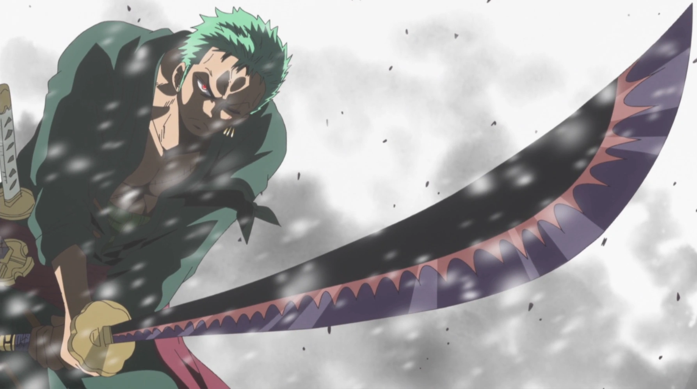
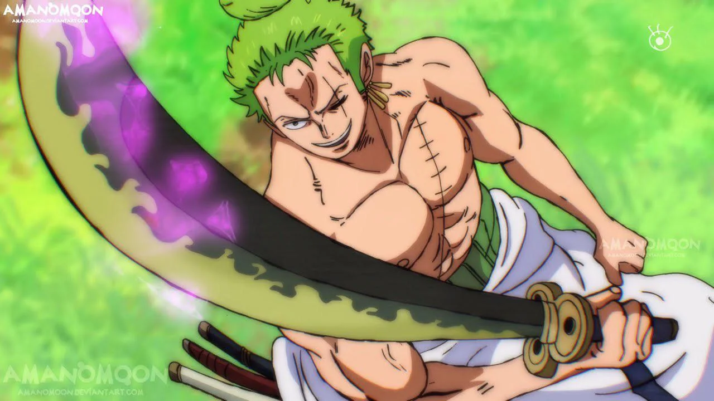
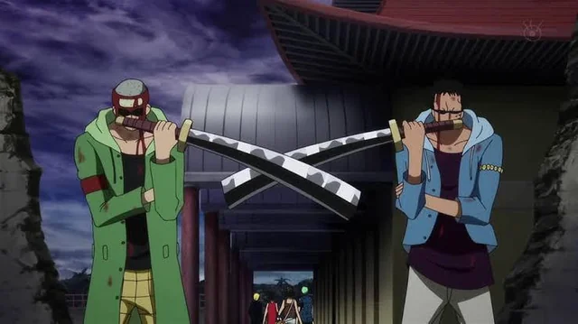
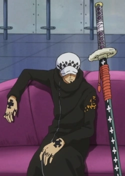

seguinte parceiro, se você é raiz mesmo e conhece mesmo One piece, nós iremos descobrir agora.
Caso contrário ruinas irão cair sobre ti.
Pergunta 1: Que tipo de acessório o luffy usa em sua cabeça?
Pergunta 2: Qual o nome do cachorro que protege a loja de seu dono na ilha Orange Town (na dublagem brasileira)?
Pergunta 3: Qual o nome secreto dado ao rei dos atiradores em water seven?
Pergunta 4: Em que ano nasceu Eiichiro Oda?
Pergunta 5: Quais desses fazem parte da tripulação dos chapéu de palha?
Pergunta 6: abra o arquivo super secreto e digite a senha
Pergunta 7: Qual dessas é a comida preferida do Luffy?
Pergunta 8: Qual dessas espadas o zoro nunca usou?





Tabela de pontuação
| Pontuação | Avaliação |
|---|---|
| 1 | Meu deus como que pode errar algo tão fácil |
| 2 | puxa vida, não sabe nada mesmo |
| 3 | "Gente, leiam com ATENÇÃO AS PERGUNTAS"🙄 |
| 4 | ok, chegou na metade. Mas ainda me serpreende errar tudo isso |
| 5 | queria que tivesse acertado mais |
| 6 | olha só, faltou um pouco ainda. Você consegue melhorar |
| 7 | Maza, acertou quase tudoooo, uhulll👌 |
| 8 | não esperava menos que isso |
| Assista mais episódios | |
Verifique suas respostas
Nem precisa né🙄
respotas
- chapéu de palha
- chuchu
- sogueking
- 01/01/1975
- nami, luffy
- godusopp
- carne
- nodachi